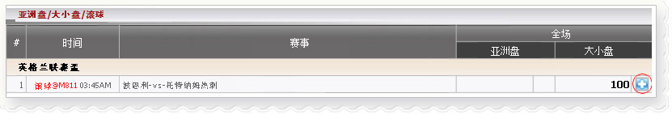
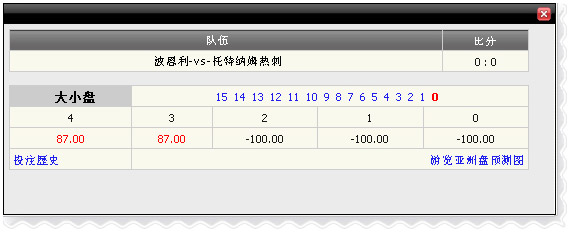

亚洲盘/ 大小/ 滚球
定义:
查看代理赢输根据占成注单投注种类之亚洲盘/ 大小/ 上半场滚球或全场.
亚洲盘/ 大小/ 滚球 _01
与法国丙组联赛，会员赌罗德兹-vs-阿勒斯,详情如下
- 第一注单: 金额=10,赔率= 0.85, 投注种类:大小,全场,代理占成=50%
--> 代理收入根据占成= -(金额*占成)= -10*50%= -5
- 第二注单: 金额=10,赔率= -0.81, 投注种类:大小,上半场,代理占成=50%
--> 代理收入根据占成= -(金额*占成)= -10*50%*-0.81= -4
注意:
- 根据亚洲盘占成 = (主总金额- 客总金额) *代理占成
- 代理收入根据大小占成 = (总大金额 - 总小金额) *代理占成
- 签署“-”是指总营业额给客/小大过于总营业额给主/ 大.
- 赔率< 0 那么代理收入金额= 金额*代理占成*赔率
- 赔率> 0那么代理收入金额= 金额*代理占成
预测功能
这项功能可以帮助代理找出赢输金额根据主场得分，客场得分。 要查看赢输预测，点击“+”号。在这个例子中member01 在主队投注200 - 波恩利亚洲盘= 2.5，赔率0.87，投注种类 =大，代理人占成= 50％。

亚洲盘/ 大小/ 滚球 _02
弹出窗口将显示如下 :

预测
这是根据大小盘预测和详情如下:
- 1: -100 --> 如果(主得分 + 客得分) = 1那么代理将赢 : 200*50%=100
- 2: -100 --> 如果(主得分 + 客得分) = 2 那么代理将赢 : 200*50%=100
- 3: 87 --> 如果(主得分 + 客得分) = 3 那么代理将输 : 200*0.87*50%=87
- 4: 87 --> 如果(主得分 + 客得分) = 4 那么代理将输 : 200*0.87*50%=87
注意:
对于亚洲盘预测 , 结果将会计算主得分相减客得分.